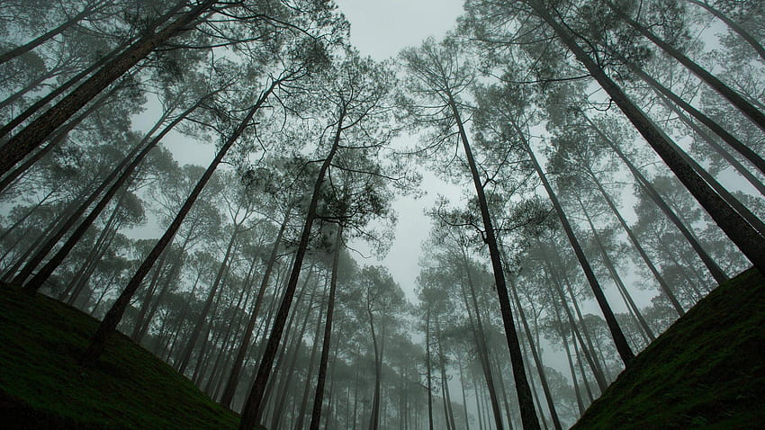

Featured Photos



Almora, located in the Kumaon region of Uttarakhand, is a picturesque hill station known for its scenic beauty, ancient temples, and cultural heritage. Perched at an altitude of approximately 1,638 meters (5,374 feet) above sea level, Almora offers panoramic views of the Himalayas including the peaks of Nanda Devi, Trishul, and Panchachuli. The town is characterized by its narrow winding streets, traditional stone houses, and lush greenery. Almora is also famous for its cultural festivals, including the Nanda Devi and Shivaratri festivals, which attract visitors from far and wide. The region surrounding Almora is rich in biodiversity, with opportunities for trekking, birdwatching, and exploring the pristine natural landscapes. Visitors to Almora can also explore nearby attractions such as the Katarmal Sun Temple, Jageshwar Dham, and Binsar Wildlife Sanctuary.